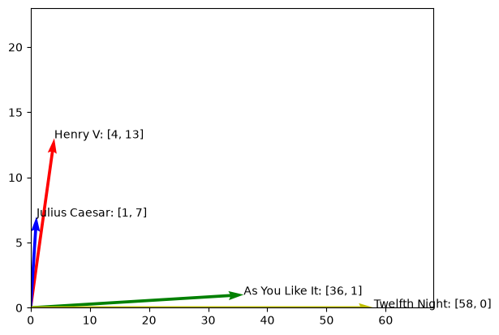

Concept: Words and Vectors#
Term-Document Matrix#
In a term-document matrix, each row represents a word in the vocabulary, and each column represents a document from a collection of documents. In the figure Number of occurrences of selected words in four Shakespeare plays., we construct a simple \(4 \times 4\) term-document matrix for four Shakespeare plays.
As You Like It |
Twelfth Night |
Julius Caesar |
Henry V |
|
|---|---|---|---|---|
battle |
1 |
0 |
7 |
13 |
good |
114 |
80 |
62 |
89 |
fool |
36 |
58 |
1 |
4 |
wit |
20 |
15 |
2 |
3 |
Each cell in the table is the number of times that word \(d\) appears in document \(n\).
As You Like It |
Twelfth Night |
Julius Caesar |
Henry V |
|
|---|---|---|---|---|
battle |
1
|
0
|
7
|
13
|
good |
114
|
80
|
62
|
89
|
fool |
36
|
58
|
62
|
4
|
wit |
20
|
15
|
2
|
3
|
We can represent this as a matrix:
Then we can define each column as a document (sample), and each value (feature) as the number of times a word appears in a document. Readers who are familiar with Machine Learning will start to notice that this matrix has very similar representation to the Design Matrix.
Remark 10 (Number of Features)
The authors remarked that this example has only 4 dimensions (words), and 4 samples (documents). However, in practice, the there can be \(N\) documents and \(D\) words. Consequently, \(\mathbf{X}\) will have \(N\) rows and \(D\) columns.
Each document is treated as a sample \(\mathbf{x}^{(n)} \in \mathbb{R}^{D}\), where \(n\) is the index of the sample. But each document may have different amount of vocabulary, and how do we fix the number of features \(D\)?
First, we define the number of features to be the number of unique vocabulary (words) in the entire corpus of documents being analyzed. Each word represents a feature, and the size of the feature space is determined by the number of unique terms that are present in the corpus.
For example, if we have a corpus of 100 documents and 1000 unique words across all documents, then the feature space will have 1000 features.
Motivation#
The motivation of the Term-Document Matrix is to represent the number of occurrences of each word in a document. It’s original purpose is Information Retrieval. The idea is that we can use the Term-Document Matrix to find similar documents based on the number of occurrences of each word.
Example 4 (Information Retrieval)
The idea is that if two documents have similar number of occurrences of a word, then they are likely to be similar. Imagine two documents that talks about sports, then words such as “ball”, “basketball”, “football”, “soccer”, “goal”, “score”, “win”, “lose”, etc will be common in both documents. Therefore, we can say that two documents that are similar will tend to have similar words [Jurafsky and Martin, 2022].
In our example, As You Like It and Twelfth Night are similar in the sense that they are both comedies. Therefore, they will tend to have similar words such as “good”, “fool”, “wit”, etc. Less formally, their column vectors will be similar than that of Julius Caesar and Henry V.
From the above vectors comparison, if we just take 2 dimensions, say dimensions of fool and battle,
we can see that there are 36 and 58 occurences of fool in As You Like It and Twelfth Night respectively,
but only a mere 1 and 4 occurences in Julius Caesar and Henry V respectively.
Intuitively, we expect a comedy to have more fool than that of other genres. And from the
raw absolute numbers, we can see that 36 and 58 are closer when compared to 1 and 4.
Similarly, for the word battle, there are 7 and 13 occurences in Julius Caesar and Henry V respectively,
but only 1 and 0 occurences in As You Like It and Twelfth Night respectively. And we also can
conclude that 7 and 13 are closer than 1 and 0.
Therefore, we can say that As You Like It and Twelfth Night are more similar than Julius Caesar and Henry V.
Note that we have yet to define the notion of closeness. We will formalize this intuition later.
Let’s plot out on the 2D plane to have a better visualization.
import matplotlib.pyplot as plt
from matplotlib.quiver import Quiver
import numpy as np
from typing import Any, Dict
from rich import print
from rich.pretty import pprint
X = np.array([[1, 0, 7, 13], [114, 80, 62, 89], [36, 58, 1, 4], [20, 15, 2, 3]])
def plot_quiver(
ax: plt.Axes,
x: np.ndarray,
y: np.ndarray,
u: np.ndarray,
v: np.ndarray,
angles: str = "xy",
scale_units: str = "xy",
scale: float = 1,
**kwargs: Dict[str, Any]
) -> Quiver:
"""Plot quiver."""
return ax.quiver(
x, y, u, v, angles=angles, scale_units=scale_units, scale=scale, **kwargs
)
Let’s create a 2d-matrix with only the features fool and battle, as follows.
X_2d = np.array([[4, 13], [1, 7], [36, 1], [58, 0]])
pprint(X_2d)
array([[ 4, 13], │ [ 1, 7], │ [36, 1], │ [58, 0]])
documents = ["Henry V", "Julius Caesar", "As You Like It", "Twelfth Night"]
fig, ax = plt.subplots()
# set x and y limits to display only the first quadrant
ax.set_xlim([0, X_2d[:, 0].max() + 10])
ax.set_ylim([0, X_2d[:, 1].max() + 10])
# plot the quiver arrows
quiver = plot_quiver(
ax,
np.zeros(X_2d.shape[0]),
np.zeros(X_2d.shape[0]),
X_2d[:, 0],
X_2d[:, 1],
angles="xy",
scale_units="xy",
scale=1,
color=["r", "b", "g", "y"],
)
# annotate the arrows with the words
for i, word in enumerate(documents):
word_vector = f"{word}: [{X_2d[i, 0]}, {X_2d[i, 1]}]"
ax.annotate(word_vector, (X_2d[i, 0], X_2d[i, 1]))
plt.show();

Similar Documents have Similar Words#
This summarizes the intuition of the Term-Document Matrix. Similar documents have similar words.
Words as Vectors: Document Dimensions#
In the previous section, we represented each document \(n\) as a vector \(\mathbf{x}^{(n)}\) of dimension \(D\) (number of words in the vocabulary).
Now, we can turn the tables and represent each word as a vector instead. Now, define the number of total words in the vocabulary as \(N\), and the number of documents as \(D\) (essentially swapping the notations). Then, we see that each word \(n\) is represented as a vector \(\mathbf{x}^{(n)}\) of dimension \(D\).
Let’s see how the new matrix look.
And each row is now a sample.
Simiarly, similar documents tend to have similar words, and similar words tend to appear in similar documents.
So this format of term-document matrix allows us to represent the meaning of a word by the document it tends to
appear in [Jurafsky and Martin, 2022]. So say the word fool, now it is \(\begin{bmatrix} 36 & 58 & 1 & 4 \end{bmatrix}\),
and we see that it appears more in As You Like It and Twelfth Night than in Julius Caesar and Henry V.
The distinction is that we are comparing words similarity instead of documents similarity.
Similar Words have Similar Documents#
This summarizes the intuition of the Term-Document Matrix (Document Dimensions). Similar words have similar documents.
Words as Vectors: Word Dimensions (Term-Term Matrix)#
An alternative to using the term-document matrix to represent words as vectors of document counts, is to use the term-term matrix, also called the word-word matrix or the term-context matrix, in which the columns are labeled by words rather than documents. This matrix is thus of dimensionality \(|V| \times|V|\) and each cell records the number of times the row (target) word and the column (context) word co-occur in some context in some training corpus. The context could be the document, in which case the cell represents the number of times the two words appear in the same document. It is most common, however, to use smaller contexts, generally a window around the word, for example of 4 words to the left and 4 words to the right, in which case the cell represents the number of times (in some training corpus) the column word occurs in such a \(\pm 4\) word window around the row word. For example here is one example each of some words in their windows: is traditionally followed by cherry pie, a traditional dessert often mixed, such as strawberry rhubarb pie. Apple pie computer peripherals and personal digital assistants. These devices usually a computer. This includes information available on the internet
If we then take every occurrence of each word (say strawberry) and count the context words around it, we get a word-word co-occurrence matrix. Fig. \(6.6\) shows a simplified subset of the word-word co-occurrence matrix for these four words computed from the Wikipedia corpus (Davies, 2015).
aardvark |
… |
computer |
data |
result |
pie |
sugar |
… |
|
|---|---|---|---|---|---|---|---|---|
cherry |
0 |
… |
2 |
8 |
9 |
442 |
25 |
… |
strawberry |
0 |
… |
0 |
0 |
1 |
60 |
19 |
… |
digital |
0 |
… |
1670 |
1683 |
85 |
5 |
4 |
… |
information |
0 |
… |
3325 |
3982 |
378 |
5 |
13 |
… |
Check that indeed the matrix should be \(|V| \times|V|\). Here is example only?